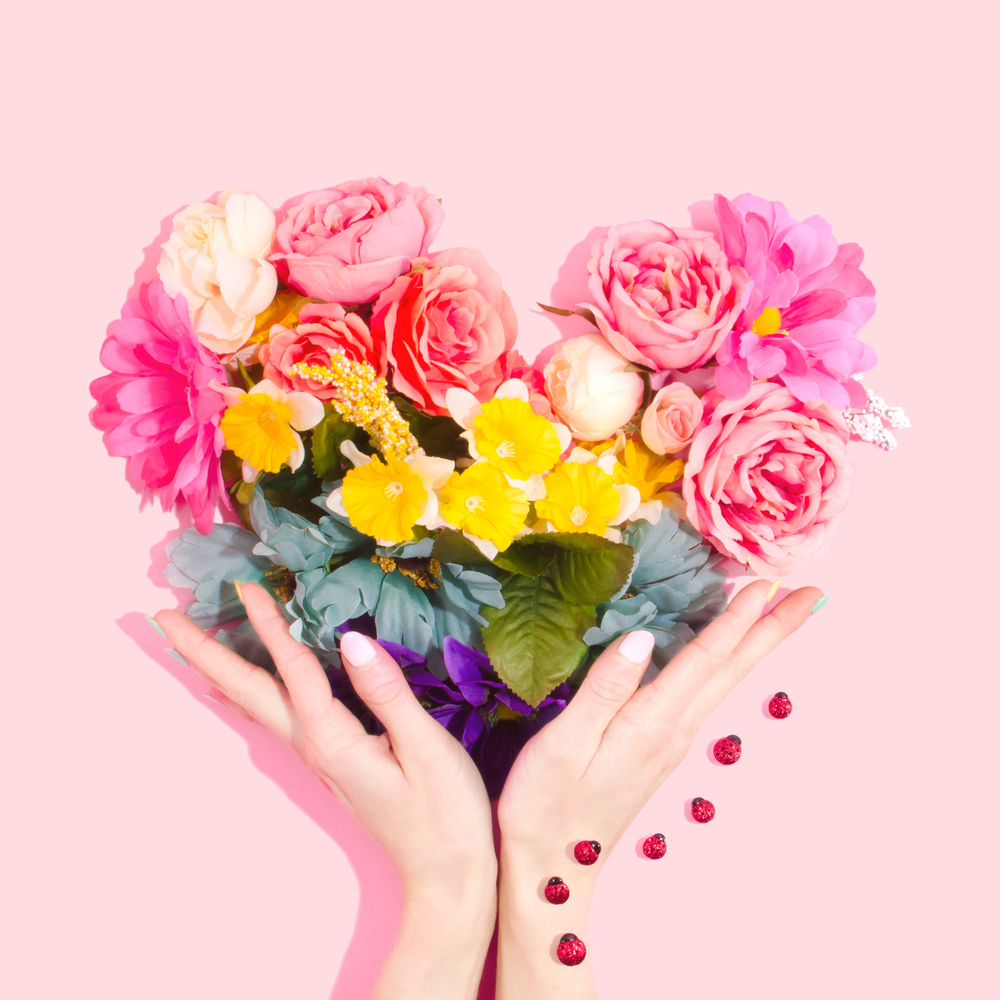

Eclectic and Electric 60s Rock Festival
By Pablo Neruda 4/23/2020
Although particularly associated with recreation and play, fun may be encountered during work, social functions, and in daily life. There are psychological and physiological implications to the experience of fun. An 18th century meaning (still used in Orkney and Shetland[1]) was "cheat, trick, hoax", a meaning still retained in the phrase "to make fun of".The landlady was going to reply, but was prevented by the peace-making sergeant, sorely to the displeasure of Partridge, who was a great lover of what is called fun, and a great promoter of those harmless quarrels which tend rather to the production of comical than tragical incidents.... Read more

Samsung Marketing Event Rocks SXSW
By Milan Kundera 4/15/2020
The word fun is associated with sports, sexual activity, entertaining media, high merriment,[3] and amusement. Although its etymology is uncertain,[1] it has been speculated that it may be derived from fonne (fool) and fonnen (the one fooling the other)... Read more

Happening to Produce Five New Musical Showcases at Auditorium Shores in 2019
By Barbara Kingsolver 4/04/2019
The way the word fun is used demonstrates its distinctive elusiveness and happiness. Expressions such as "Have fun!" and "That was fun!" indicate that fun is pleasant, personal, and to some extent unpredictable... Read more
Check Out Our Updated Marketing Capabilities Dek
By Assata Shakur 3/27/2020
Expressions such as "I was making fun of myself" convey the sense that fun is something that can be amusing and not to be taken seriously. The adjective "funny" has two meanings which often need to be clarified between a speaker and listener... Read more

Happening Brings Pumping EDM to Brookdale Senior Center
By Rebecca Solnit 2/13/2020
One meaning is "amusing, jocular, droll" and the other meaning is "odd, quirky, peculiar". These differences indicate the evanescent and experiential nature of fun and the difficulty of distinguishing "fun" from "enjoyment"... Read more

Saint Patty’s Photo Booth
By Oliver Sachs 1/28/2020
Fun's evanescence can be seen when an activity regarded as fun becomes goal-oriented. Many physical activities and individual sports are regarded as fun until the participant seeks to win a competition, at which point, much of the fun may disappear as the individual's focus tightens... Read more
Classic Hip Hop. Classic Cocktails.
By Michael Crichton 4/9/2020
Surfing is an example. If you are a "mellow soul" (not in a competition or engaging in extreme sport) "once you're riding waves, you're guaranteed to be having ... fun". The pleasure of fun can be seen by the numerous efforts to harness its positive associations... Read more
What Were the Most Happening Events of 2018?
By Aimee Cesaire 1/23/2019
For example, there are many books on serious subjects, about skills such as music, mathematics and languages, normally quite difficult to master, which have "fun" added to the title. Many physical activities provide opportunities to play and have fun. Not only can these activities be fun but can also improve physical and mental states... Read more

New Partnership with Bacardi Rum
By Antonin Artaud 12/13/2018
According to Johan Huizinga, fun is "an absolutely primary category of life, familiar to everybody at a glance right down to the animal level."[12] Psychological studies reveal both the importance of fun and its effect on the perception of time, which is sometimes said to be shortened when one is having fun... Read more
Partying at the New Mid-Town Lofts Development
By Anais Nin 11/2/2018
As the adage states: "Time flies when you're having fun". It has been suggested that games, toys, and activities perceived as fun are often challenging in some way... Read more
Smoke Machines and Zombie Makeup: Our Halloween Extravaganza Downtown
By Jean Genet 4/9/2018
When a person is challenged to think consciously, overcome challenge and learn something new, they are more likely to enjoy a new experience and view it as fun. A change from routine activities appears to be at the core of this perception, since people spend much of a typical day engaged in activities that are routine and require limited conscious thinking... Read more

Happening Moves into Our New Offices
By Andre Breton 10/16/2019
Routine information is processed by the brain as a "chunked pattern": "We rarely look at the real world", according to game designer Raph Koster, "we instead recognize something we have chunked, and leave it at that. [...] One might argue that the essence of much of art is in forcing us to see things as they really are rather than as we assume them to be".. Read more